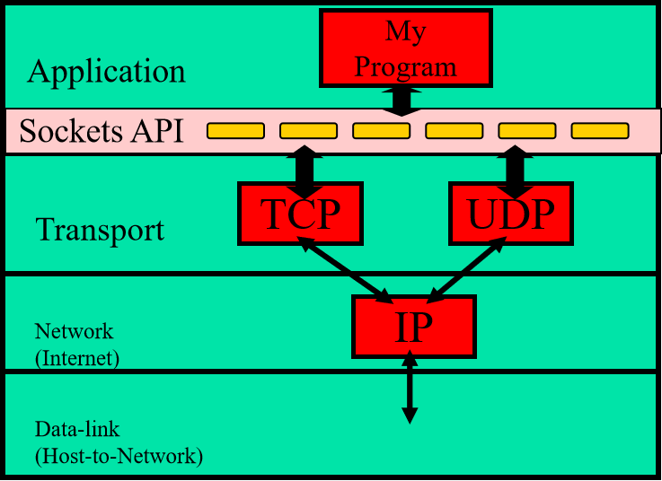

Shaofeng's Personal Website
Berkeley sockets is an application programming interface for Internet sockets and Unix domain sockets, used for inter-process communication. It is commonly implemented as a library of linkable modules.
It originated with the 4.2BSD Unix operating system, released in 1983.

| 原语(primitives) | 含义 |
|---|---|
| socket | 创建一个新的套接字 |
| bind | 将一个本地地址绑定到一个套接字上 |
| listen | 宣布愿意接收连接，给出队列大小 |
| accept | 阻塞调用方，直到有人连接上来 |
| connect | 主动尝试建立一个连接 |
| send | 在指定的连接上发送数据 |
| recv | 在指定的连接上接收数据 |
| close | 释放指定的连接 |
TCP client-server交互流程
UDP client-server交互流程